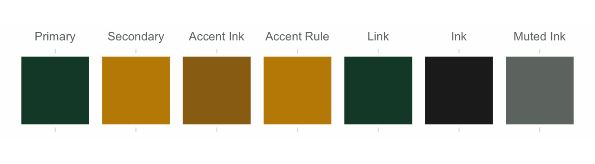
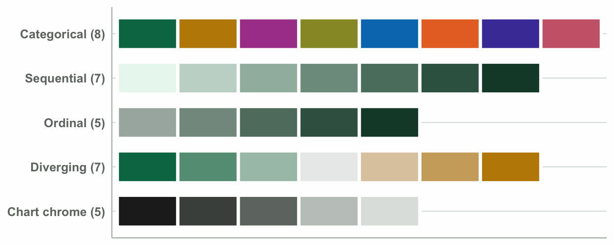
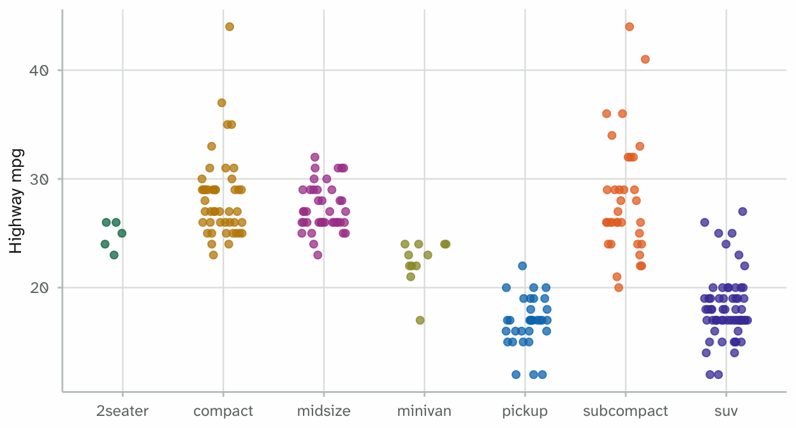
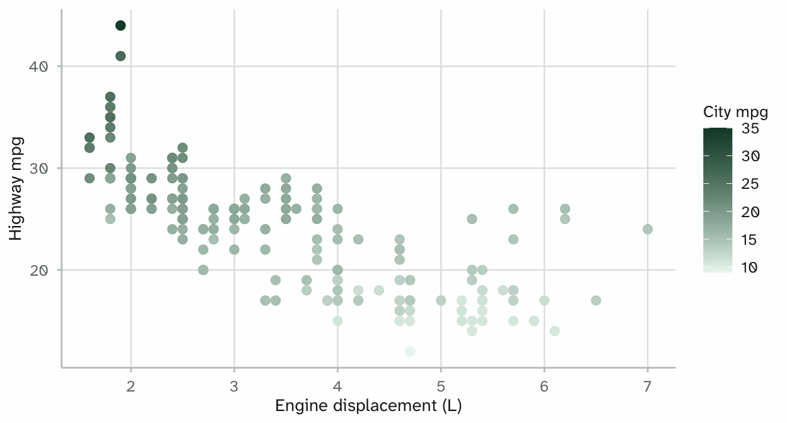
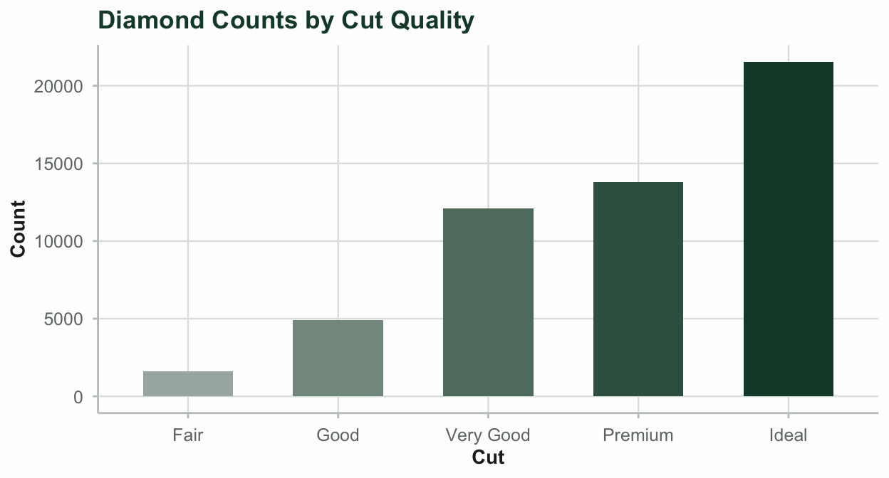
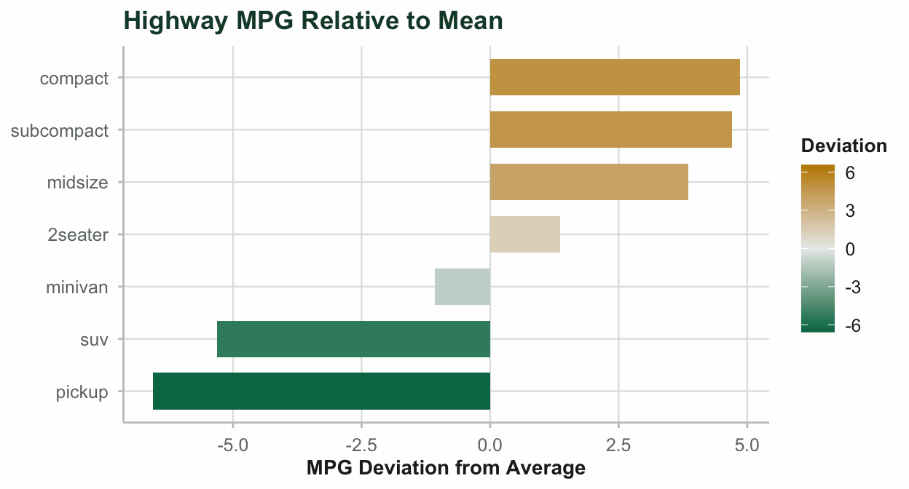
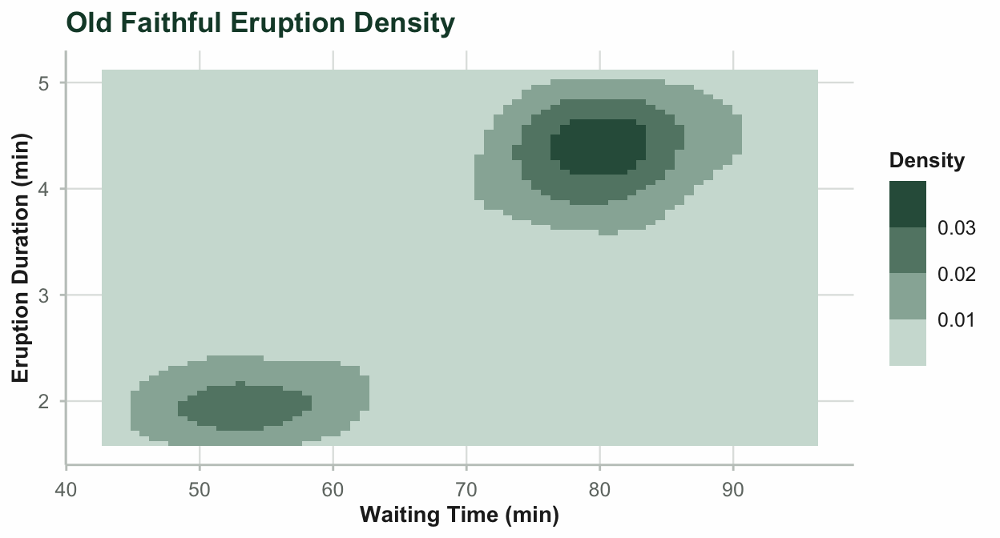

names(mariner_colors())
#> [1] "background" "foreground" "mariner-green" "mariner-gold"
#> [5] "gold-ink" "gold-rule" "series-1-green" "series-2-gold"
#> [9] "series-3-purple" "series-4-olive" "series-5-sky" "series-6-orange"
#> [13] "series-7-indigo" "series-8-rose" "seq-1" "seq-2"
#> [17] "seq-3" "seq-4" "seq-5" "seq-6"
#> [21] "seq-7" "ord-1" "ord-2" "ord-3"
#> [25] "ord-4" "ord-5" "div-1" "div-2"
#> [29] "div-3" "div-4" "div-5" "div-6"
#> [33] "div-7" "ink" "ink-secondary" "ink-muted"
#> [37] "rule-grid" "rule-axis" "primary" "secondary"
#> [41] "link" "accent-ink" "accent-rule" "on-primary"
#> [45] "on-secondary" "series-1" "series-2" "series-3"
#> [49] "series-4" "series-5" "series-6" "series-7"
#> [53] "series-8"
mariner_colors()[c("background", "ink", "primary", "secondary", "link")]
#> background ink primary secondary link
#> "#fefefe" "#222222" "#154734" "#c28a01" "#154734"mariner ships a document theme and a matching palette for ggplot2.
1. Brand Palette and Chrome
The brand colours split in two.
- Chrome roles: the page background, headings, rules and link text.
- Data series: the colours a figure draws with. Each one clears a contrast threshold against the background and stays separable under colour vision deficiency.
mariner_colors() returns every colour the theme defines, by name:
Brand Chrome Roles

2. Palette Families
mariner_pal() covers four families:
-
Discrete (
"discrete"): categories, up to 8 classes. -
Sequential (
"sequential"): magnitude. -
Ordinal (
"ordinal"): ordered factors. -
Diverging (
"diverging"): values around a neutral midpoint.
The last row below is not a family. Chart chrome is a set of roles from mariner_colors() — the ink and rules a panel is drawn with. It is here because a figure uses those colours without being asked.

3. Scale Functions
Five scale families reach four palettes. Sequential is spent twice: scale_*_mariner_c() runs it as a gradient, scale_*_mariner_b() cuts it into steps. The rest map one to one — _d() to discrete, _o() to ordinal, _div() to diverging. Each has a colour and a fill form, and scale_color_* works everywhere scale_colour_* does.
One dataset throughout, fuel economy for 234 vehicle models, so a difference between two tabs is the scale rather than a change of subject. The gallery PDF carries the same figures.
mpg_data <- ggplot2::mpg
mpg_data$class <- factor(mpg_data$class)
# Ordinal needs an ordered variable, so displacement is cut into ranked bands.
mpg_data$size <- cut(mpg_data$displ, 3,
labels = c("Small", "Medium", "Large"))
class_summary <- aggregate(cbind(cty, hwy) ~ class, data = mpg_data, FUN = mean)
class_summary$delta <- class_summary$hwy - mean(mpg_data$hwy)
class_summary <- class_summary[order(class_summary$delta), ]
class_summary$class <- factor(class_summary$class, levels = class_summary$class)scale_colour_mariner_d() — categories with no order. The observations themselves rather than a boxplot, which would summarise them and hide how many models sit behind each class.
ggplot(mpg_data, aes(class, hwy, colour = class)) +
geom_jitter(width = 0.22, height = 0, alpha = 0.75, size = 1.8) +
scale_colour_mariner_d() +
labs(x = NULL, y = "Highway mpg") +
theme_mariner() +
theme(legend.position = "none")
scale_colour_mariner_c() — magnitude on one hue, as a smooth gradient.
ggplot(mpg_data, aes(displ, hwy, colour = cty)) +
geom_point(size = 2.2, alpha = 0.9) +
scale_colour_mariner_c() +
labs(x = "Engine displacement (L)", y = "Highway mpg", colour = "City mpg") +
theme_mariner()
scale_fill_mariner_o() — a few ranked levels. The palette ramps rather than contrasts, so the colours carry the order.
ggplot(mpg_data, aes(size, fill = size)) +
geom_bar(width = 0.6) +
scale_fill_mariner_o() +
labs(x = "Engine size band", y = "Models") +
theme_mariner() +
theme(legend.position = "none")
scale_fill_mariner_div() — a signed quantity, where the neutral step means no difference. The limits are symmetric on purpose. Without that, the neutral step lands wherever the data straddles and the scale misplaces zero.
lim <- max(abs(class_summary$delta))
ggplot(class_summary, aes(class, delta, fill = delta)) +
geom_col(width = 0.7) +
scale_fill_mariner_div(limits = c(-lim, lim)) +
labs(x = NULL, y = "Difference from overall mean (mpg)") +
theme_mariner() +
theme(legend.position = "none")
scale_colour_mariner_b() — the sequential palette cut into steps. Use it when a reader has to name the band a point falls in, not just rank two points by eye.
ggplot(mpg_data, aes(displ, hwy, colour = cty)) +
geom_point(size = 2.2, alpha = 0.9) +
scale_colour_mariner_b() +
labs(x = "Engine displacement (L)", y = "Highway mpg", colour = "City mpg") +
theme_mariner()
4. Knitr Chunk Configuration
In the setup chunk of a report, mariner_knitr_setup() sets the chunk options and the ggplot2 theme:
mariner_knitr_setup("pdf")5. Document Markup and Callouts
The theme gives a report two more things. Both act on PDF output only: a Lua filter in the Quarto extension carries them, so they do nothing in this HTML vignette. The gallery PDF has them typeset.
Markup for defined terms and blocks:
| Written | Renders as |
|---|---|
[formal sum]{.defn} |
a defined term — underlined italic, brand primary |
[basis]{.term} |
a key term — bold, brand primary |
[combination]{.termref} |
a reference back to one — italic, brand primary |
[unreduced]{.emph} |
strong emphasis — underlined bold italic |
[A B C]{.font-headings} |
a specimen set in the heading face |
[A B C]{.font-body} |
a specimen set in the body face |
::: {.def} … :::
|
a definition block, indented under a rule |
::: {.thm} … :::
|
a theorem block, ruled above and below |
An identifier on a .defn — [support]{.defn #support} — also plants a cross-reference target.
Markdown *italics* are untouched. .emph is its own mark, not a restyling of emphasis.
Callouts. Quarto’s five — ::: {.callout-note}, .callout-tip, .callout-warning, .callout-important and .callout-caution — work as usual and take the brand colours on their border and title.